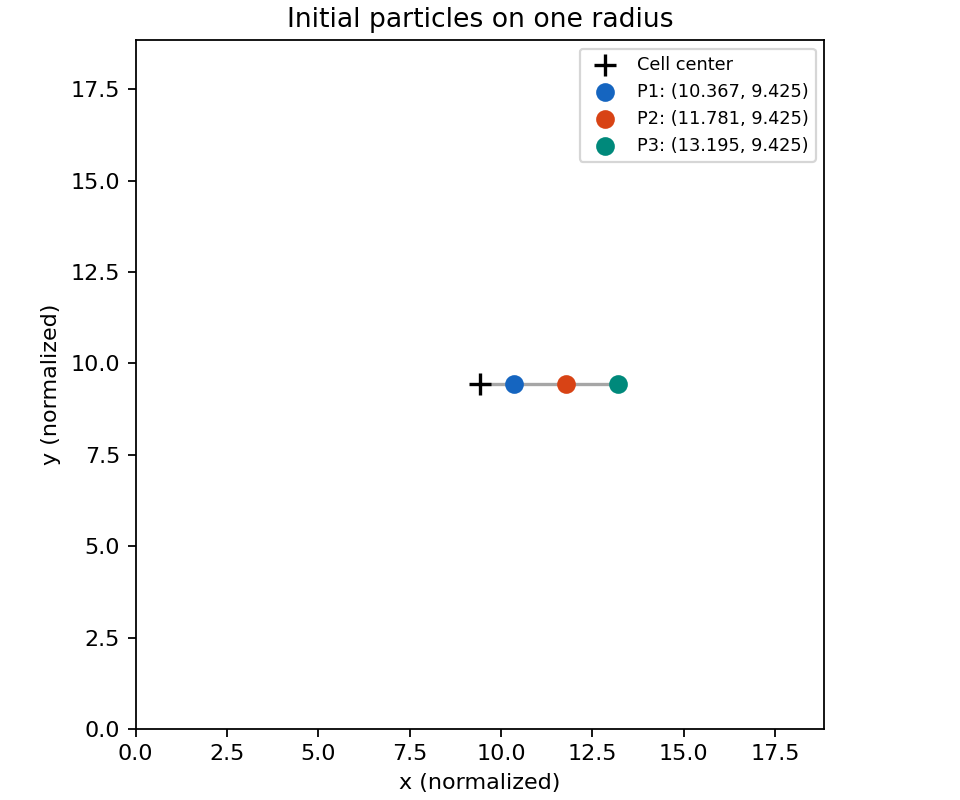
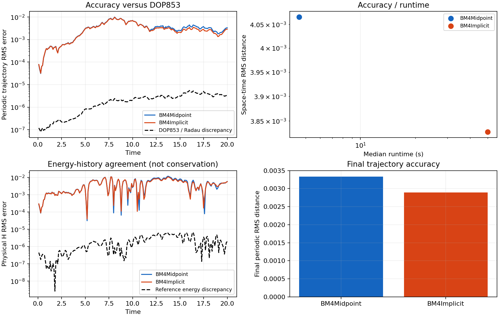
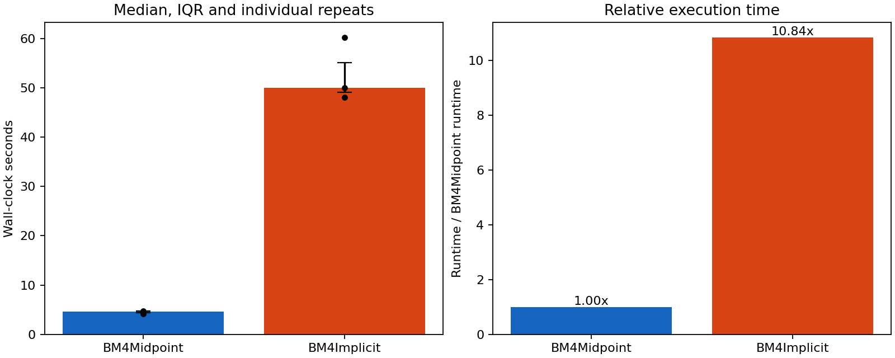
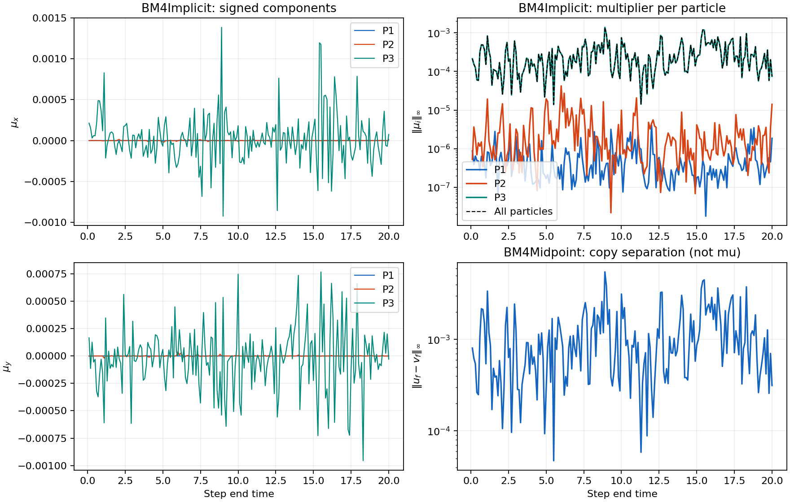
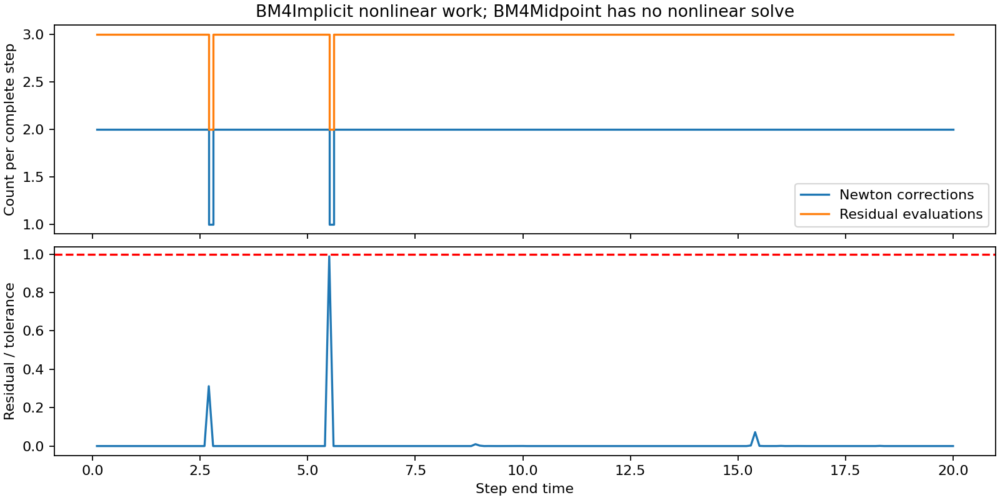

Three radial starts; interval 0 to 20; 200 complete steps. Physical-state formulations; identical data and save times.
Fastest median: BM4Midpoint. Smallest trajectory RMS: BM4Implicit. Smallest physical-energy RMS error: BM4Implicit. DOP853/Radau trajectory RMS discrepancy: 2.59143e-06. The reference discrepancy estimates numerical resolution, not a rigorous error bound.
| Method | Median s | Q1 s | Q3 s | Trajectory RMS | Final RMS | Max distance | Energy RMS | Max energy error |
|---|---|---|---|---|---|---|---|---|
| BM4Midpoint | 4.61336 | 4.36779 | 4.69085 | 0.00406569 | 0.00333347 | 0.0172889 | 0.00532551 | 0.020428 |
| BM4Implicit | 49.9921 | 49.0392 | 55.1255 | 0.00382797 | 0.00289538 | 0.0168834 | 0.00497219 | 0.0187314 |
Errors use minimum-image periodic distances. Physical-energy error is disagreement with the DOP853 energy history, not energy conservation. Timings exclude reference generation and the separate multiplier replay.
Particle colors are consistent across panels. Crosses show initial positions. Trajectories wrap periodically; lines break at the cell boundary.
| Particle | x | y |
|---|---|---|
| P1 | 10.3672558 | 9.42477796 |
| P2 | 11.7809725 | 9.42477796 |
| P3 | 13.1946891 | 9.42477796 |
BM4Implicit global infinity-norm statistics: mean: 0.00028233; rms: 0.000368595; maximum: 0.0013849; final: 7.48486e-05.
BM4Midpoint has no mu. Its discarded copy separation is displayed separately.
{
"solves_per_step": 1,
"mean_iterations": 1.99,
"max_iterations": 2,
"total_iterations": 398,
"mean_residual_evaluations": 2.99,
"total_residual_evaluations": 598,
"maximum_residual_to_tolerance": 0.9880375569117609
}




{
"config": {
"rho": 0.3,
"coupling_frequency": 0.39269908169872414,
"t_span": [
0.0,
20.0
],
"integration_step": 0.1,
"save_interval": 0.1,
"absolute_tolerance": 1e-12,
"relative_tolerance": 1e-11,
"max_iterations": 40,
"jacobian_relative_step": 6.0554544523933395e-06,
"reference_relative_tolerance": 1e-10,
"reference_absolute_tolerance": 1e-12,
"reference_maximum_step": 0.025,
"audit_relative_tolerance": 1e-11,
"audit_absolute_tolerance": 1e-13,
"audit_maximum_step": 0.0125,
"timing_warmups": 1,
"timing_repeats": 3,
"distance_convention": "periodic",
"progress": true
},
"source": "/home/juan/Proyectos/GC2D_intranet/data/potential/V1/PHI_2.h5",
"potential_parameters": {
"B": 1.5,
"characteristic_length": 0.06,
"indx": [
0,
1
],
"interpolation_order": 3
},
"initial_geometry": {
"radius_fractions_of_half_width": [
0.1,
0.25,
0.4
],
"angle_radians": 0.0
},
"protocol_scope": "Only the two requested BM4 methods; radial starts replace the standard spatial sample. Twenty cycles give an initial comparison; use --cycles 200 for the standard long horizon.",
"summary": {
"potential_fingerprint": "ba7fd7e8b846e90d7f1668c123a6052666e935d0076439f4711ea6247b8ef8e3",
"particle_count": 3,
"step_count": 200,
"reference_rms_floor": 2.5914264142197235e-06,
"reference_final_floor": 3.3938111006977875e-06,
"reference_energy_rms_floor": 2.7174245781311995e-06,
"reference_seconds": {
"DOP853": 66.39975790300014,
"Radau": 239.10718190400075
},
"timing_policy": "Serial alternating order; one BLAS thread; references and observer replay excluded.",
"mu_note": "Only BM4Implicit has a projection multiplier. Midpoint copy separation is a different diagnostic.",
"methods": {
"BM4Midpoint": {
"runtime_median_seconds": 4.61336362899965,
"runtime_q1_seconds": 4.367786359499405,
"runtime_q3_seconds": 4.690847534499881,
"trajectory_rms": 0.004065691968684519,
"trajectory_final_rms": 0.0033334660668771668,
"trajectory_max": 0.017288892975615953,
"energy_rms": 0.005325511397869003,
"energy_max": 0.020428035778163434
},
"BM4Implicit": {
"runtime_median_seconds": 49.99210920400037,
"runtime_q1_seconds": 49.0392055049997,
"runtime_q3_seconds": 55.12554618800095,
"trajectory_rms": 0.003827973784797674,
"trajectory_final_rms": 0.002895378246894225,
"trajectory_max": 0.016883405570953375,
"energy_rms": 0.004972190131040173,
"energy_max": 0.01873140930495154
}
},
"mu": {
"mean": 0.0002823298613537329,
"rms": 0.0003685954394326858,
"maximum": 0.0013848981684799844,
"final": 7.484855793633887e-05
},
"nonlinear_work": {
"solves_per_step": 1,
"mean_iterations": 1.99,
"max_iterations": 2,
"total_iterations": 398,
"mean_residual_evaluations": 2.99,
"total_residual_evaluations": 598,
"maximum_residual_to_tolerance": 0.9880375569117609
}
}
}